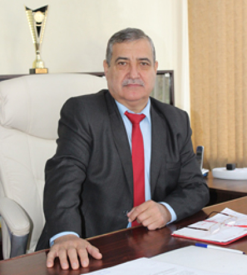

Primăria Cinșineuți
| Primarul: | Victor Corovai |
|  | |
| Telefoane de contact: |
0254 51 2 36 (Primarul, Victor Corovai) 0254 51 2 38 (Secretar a primăriei şi al Consiliului local, Cuşnir Nina) 0254 51 2 37 (Contabil - şef, Reznic Lidia) |
| Adresa: | 3484 Keeling Crescent |
| FAX: | 0235 40236 |
| Adresă electronică: | example@gmail.com |
| Așezarea geografică: |
10 km de la centrul raional, oraşul Rezina 60 km de la capitala, municipiul Chişinău |
| Numărul de locuitori: | 2646 |
| Naționalități: |
Moldoveni – 2000 Ucraineni – 521 Ruşi - 54 Romi - 56 Găgăuzi - 05 Alte naționalități – 10 |
|
Istoria satului: Satul Cinişeuţi este o unitate administrativ-teritorială, în componenţa căreia este însăși satul. Prima atestare a satului Cinişeuţi a fost făcută la 5 februarie 1495. Localitatea Cinişeuţi, cel mai mare sat din raionul Rezina, are o istorie lungă şi glorioasă. În articolul „Cinişeuţi”, semnat de istoricul Vladimir Nicu şi publicat în săptămînalul „Viaţa Satului” din 07 ianuarie 1995, citim: „Nepoţii lui Sima Rigină vând acest sat drept 80 zloţi tătăreşti lui pan Toader, pisar domnesc, doar el avea privilegii pentru sat şi de la străbunul lor, Negrea, încă de pe vremea lui Alexandru cel Bun. La recesământul din 1803, în satul Cinişeuţi, ce aparţinea căminarului Andoni Zileţi, s-au înregistrat 151 de gospodării ţărăneşti, iar la recesămîntul din 1814 erau de acum 193 de gospodării cu 480 de bărbaţi şi 436 de femei.Pe atunci 300 de familii erau ţărani, preocupaţi de fabricarea obiectelor din ceramică – vaze, căni, străchini, ulcioare, burluie, marcoteţe, gavanoase. Abia în anul 1875 ţăranilor liberi li se repartizează 1198 de desetine de pământ din moşia boerului Vasile Dileţi. |
| Transport public (orar) | ||
|---|---|---|
| Nr. d/o | Denumirea rutei | Orarul de circulaţie |